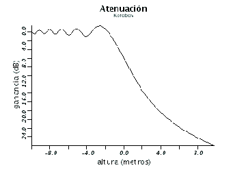

Siguiente: Algoritmo de búsqueda del
Subir: Resolución de la integral
Anterior: Método RQMC
Índice General
Algoritmo para la evaluación de la
integral
En definitiva, para la evaluación de la integral y en una primera
instancia, el procedimiento es el siguiente. Se genera una
secuencia de Korobov (con los valores recomendados de y
o y ). A partir de ella se generan, por
ejemplo, 10 secuencias mediante el método RQMC con las cuales se
obtienen 10 estimaciones de la integral. El promedio de dichas
estimaciones será lo que se tome como el valor definitivo de la
integral (los resultados para un ejemplo sencillo se pueden
apreciar en la figura 10.10).
Figura 10.10:
Resultado del algoritmo inicial para r=[50 50], h=[0 u 0]
y f=800 Mhz. (r es el vector de separaciones y h es el vector de
alturas)
|

|
Pero hay un problema; Vogler [12] advierte que cuando
algún obstáculo es demasiado pequeño (su  asociado es muy
pequeño), su serie necesita de muchos términos para converger. En
este caso, esto se traduce a que cuando algún obstáculo es
despreciable se necesitaría un
asociado es muy
pequeño), su serie necesita de muchos términos para converger. En
este caso, esto se traduce a que cuando algún obstáculo es
despreciable se necesitaría un  muy grande (ver figura
10.11).
muy grande (ver figura
10.11).
Figura 10.11:
Un ejemplo donde uno de los cuchillos se vuelve
despreciable (r=[10000 5000 10000], h=[0 0 u 0] y f=100 Mhz).
|
|
Por lo tanto cuando el asociado a algún cuchillo es negativo,
habrá que verificar que el método sea confiable. El algoritmo
diseñado es el siguiente:
- Se calcula el valor de la integral mediante el
método RQMC ya comentado.
- Se construye un intervalo de confianza para la media con las
distintas estimaciones obtenidas en el paso anterior, con
determinado nivel de confianza (por ejemplo, 95%).
- Considerando que el radio del intervalo de confianza es una
medida de la incertidumbre sobre el valor de la media (es decir,
lo que se desea estimar), si dicho radio es mayor que un
porcentaje arbitrario de la media (por ejemplo, 10%), entonces se
determina cuál es el cuchillo de menor importancia (menor ), se
quita del perfil y se vuelve al paso 1 con este nuevo
perfil.
Figura 10.12:
Un ejemplo donde uno de los cuchillos se vuelve
despreciable y se aplica el algoritmo (r=[10000 5000 10000], h=[0 0
u 0] y f=100 Mhz).
|
|
Este algoritmo en la práctica ha funcionado satisfactoriamente.
Aunque hay valores que se fijan muy ``artesanalmente'' (por ejemplo
el margen sobre la media y el nivel de confianza), se han encontrado
valores que por lo general funcionan (comparar, como ejemplo, figura
10.13 con la que aparece en [50]).
Otras técnicas más estrictas desde el punto de vista matemático
podrían haber sido utilizadas. Por ejemplo, se podría haber hecho un
test de hipótesis sobre la media para verificar que sea la correcta.
Esto es, se realiza una primera tirada de estimaciones con el método
RQMC con la cual se construye el intervalo de confianza, luego se
realiza otra tirada distinta y se verifica que esta nueva media esté
dentro del intervalo de confianza. Esto es más correcto que lo
realizado, pero tiene dos inconvenientes. El primero y más
importante es que toma más tiempo pues hay que realizar dos tiradas
del método RQMC. El otro problema surge cuando la integral converge
al valor correcto en todas las tiradas, en cuyo caso el intervalo de
confianza queda muy pequeño y es muy difícil que la nueva media
también esté en dicho intervalo. O sea, descarta cuchillos cuando
debería finalizar.
Por lo tanto, los parámetros que definen el término
(ver la fórmula que aparece en la sección
5.4) son el nivel de confianza del test de hipótesis, el máximo
margen de error en porcentaje de la media y la cantidad de
repeticiones que se desea hacer del método RQMC. Además, para
acelerar los cálculos se agrega una cantidad de cuchillos máxima a
ser considerada.
Figura 10.13:
Ejemplo con la siguiente configuración: r = [15 15 10 10 15
15], h = [20 20 20 u 20 20 20] y f=1800 Mhz).
|
|
Para verificar que el método funcione correctamente, se compararon
los resultados obtenidos con resoluciones analíticas de la
integral de Vogler realizadas por él mismo en casos particulares
sencillos (tres cuchillos alineados con el transmisor y el
receptor con distancias entre ellos variable). Los resultados
pueden verse en la figura 10.14, donde se pueden
apreciar que el error es despreciable en todos los casos.
Figura 10.14:
Comparación entre analítica y estimación con r=[100-u, u,
u, 100-u]
|
|
Siguiente: Algoritmo de búsqueda del
Subir: Resolución de la integral
Anterior: Método RQMC
Índice General
SAPO